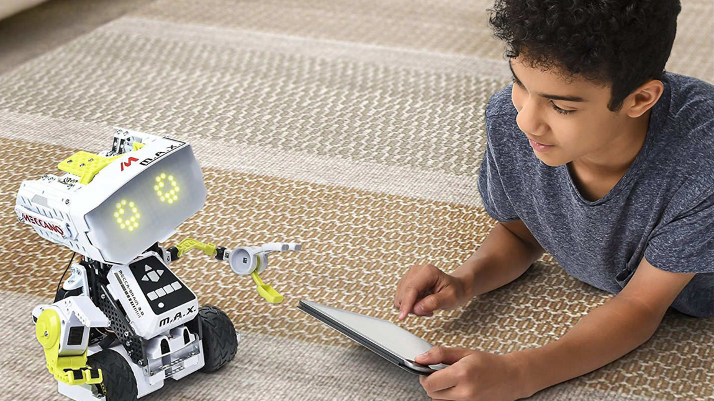

SmartBot is an AI-powered school assistant robot designed to support students, teachers,
and administrative staff in their daily tasks. Equipped with advanced machine learning
algorithms, SmartBot can perform activities such as:
- Answering student queries in real-time.
- Assisting teachers with interactive presentations.
- Helping organize school schedules and reminders.
- Navigating autonomously through school halls to deliver materials.
The goal of SmartBot is to enhance the learning experience and streamline school operations,
making it a collaborative project for students interested in robotics and automation.

SmartBot's core design includes the following components:
1. **Hardware**:
- A mobile base powered by four omni-wheels for smooth navigation.
- An articulated robotic arm with six degrees of freedom for picking and placing objects.
- A touch display interface for manual interactions.
- Sensors: LIDAR for mapping, ultrasonic sensors for obstacle avoidance, and a camera for AI vision.
2. **Software**:
- **AI Framework**: TensorFlow and OpenCV for object detection and natural language processing.
- **Control System**: Raspberry Pi for managing inputs, outputs, and connectivity.
- **Voice Recognition**: Integration with pre-trained AI models for understanding and responding to queries.
3. **Connectivity**:
- Wi-Fi and Bluetooth for remote operation and updates.
- Integration with a cloud server to store logs and enhance AI training data.
The entire system is designed to be modular and scalable, encouraging students to experiment
and enhance SmartBot's capabilities.
SmartBot can be used in a variety of educational scenarios:
1. **Classroom Assistant**:
- Explains concepts using multimedia presentations.
- Provides immediate answers to commonly asked questions using a knowledge database.
2. **Library Helper**:
- Locates and retrieves books from shelves.
- Guides students to the correct sections of the library.
3. **Administrative Tasks**:
- Delivers documents or materials across different rooms.
- Assists in monitoring attendance through facial recognition.
4. **Workshops and Labs**:
- Teaches programming and robotics concepts interactively.
- Provides hands-on demonstrations of automation in action.
These applications showcase how SmartBot can bridge the gap between education and technology,
inspiring students to innovate.
Future developments for SmartBot include:
1. **Enhanced AI**:
- Integration of GPT-like models for deeper conversational abilities.
- Improved machine learning for personalized interactions.
2. **Advanced Navigation**:
- Implementation of SLAM (Simultaneous Localization and Mapping) for dynamic environments.
- Real-time path optimization for faster and safer movement.
3. **Custom Modules**:
- Add-ons such as a temperature sensor for monitoring room conditions.
- Specialized tools for science experiments or art projects.
By fostering collaboration between students, teachers, and developers, SmartBot can evolve
into a cornerstone of modern education technology.